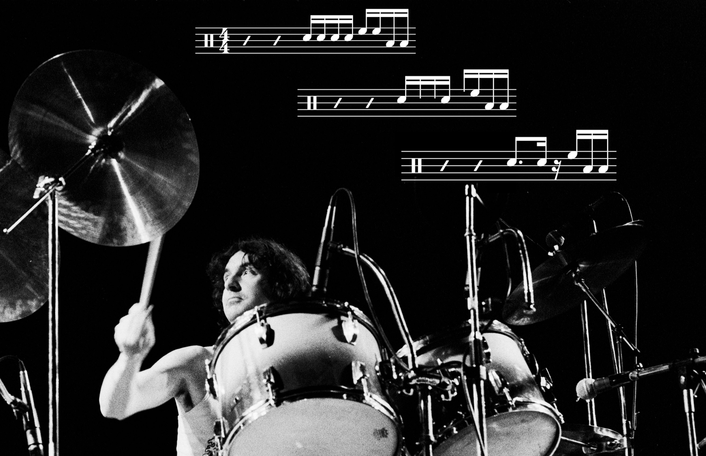

Tagged: Nick Mason
Transcription: The Nick Mason Fill Recipe
Posted on March 16, 2022
As I wrote last week, I’ve been listening to some Pink Floyd lately, as I often do at the start of the year. I regard Pink Floyd as one of the best bands out there, mainly because of their songwriting, vision, and ambition… but I’ve struggled to find a way to talk about them on the site. I don’t want to pick apart one of their tunes from a compositional perspective, since other (more knowledgable) people have already done that better than I could. And I don’t want to do a big transcription excerpt of the drumming on a Pink Floyd tune. Read More . . .